DeepTutor · Knowledge Center / Paper Libraries / Exam
Knowledge Center → Exam：真實 PDF 歷史保存 SOP
本 SOP 是一次 release-level Playwright tracer bullet：從建立 Paper Library、設定真實 extraction LLM／parser、上傳 PDF 與背景擷取，到 Paper Review、搬移、Exam、逐題保存、AI Judge，再刪除 live Paper Library 並重新讀取歷史 snapshot。
PAPER_REAL_E2E=1 執行，使用真實 PDF、真實 frontend、backend、WebSocket 與網路 LLM；沒有 route mock、fake record、synthetic stream 或 fallback 證據。測試：web/tests/e2e/knowledge-center-exam.e2e.ts。1. 實際驗收案例
Archive library 在 Exam 建立後被刪除；live paper API 變成 404，但 snapshot、圖片 attachment、Question Bank row、作答與 AI Judge 仍可讀取。測試也確認 move 前後 paper_id 不變。
| 保存欄位 | 實際值 | 用途 |
|---|---|---|
paper_library_id / name | 563e129f-065e-4764-94fe-1d96edd1e79b / Archive ms5i59ij | library provenance snapshot，不依賴 live library。 |
paper_id / display name | 2c275754-2711-4684-a47b-af1942ca16a1 / Renamed 02-…pdf | 保存搬移／重新命名後的 source identity。 |
source_question_number | 一、1-reviewed | Review 修正後的原卷題號。 |
source_snapshot_id | 17 | Question Bank 指向 immutable Exam snapshot。 |
ai_judgment | 非空實際 LLM judgment | 刪除 live library 後仍能重新顯示。 |
2. 前置條件與真實執行命令
- 專案根目錄：
/home/timmypai/apps/DeepTutor。 - 服務：backend
8001、frontend3782；Extraction LLM credentials／網路可用。 - 瀏覽器必須使用指定動態函式庫路徑；不以 mock 或 fake 取代 Chromium。
cd /home/timmypai/apps/DeepTutor
BACKEND_PORT=8001 FRONTEND_PORT=3782 PORT=3782 .venv/bin/deeptutor start
cd web
PAPER_REAL_E2E=1 \
PAPER_E2E_PDF='/home/timmypai/apps/DeepTutor/data/knowledge_bases/歷史/raw/02-115國中社會2上歷史平時測驗卷-L02-商周至隋唐時期的民族與文化-PDF教用(115f318346).pdf' \
WEB_BASE_URL=http://localhost:3782 \
LD_LIBRARY_PATH=/tmp/playwright-libs/usr/lib/x86_64-linux-gnu:$LD_LIBRARY_PATH \
npx playwright test tests/e2e/knowledge-center-exam.e2e.ts --project=ui-e2e --workers=1Python regression 使用指定形式：
PYTHONPATH=. .venv/bin/python -m pytest -c /dev/null ...3. 完整操作步驟與 screenshots
進入 Knowledge Center 的 Paper Libraries
操作：開啟
/space/questions，切換Paper Librariestab。預期：看到 private library 清單與建立 library 表單；不建立預設 library。
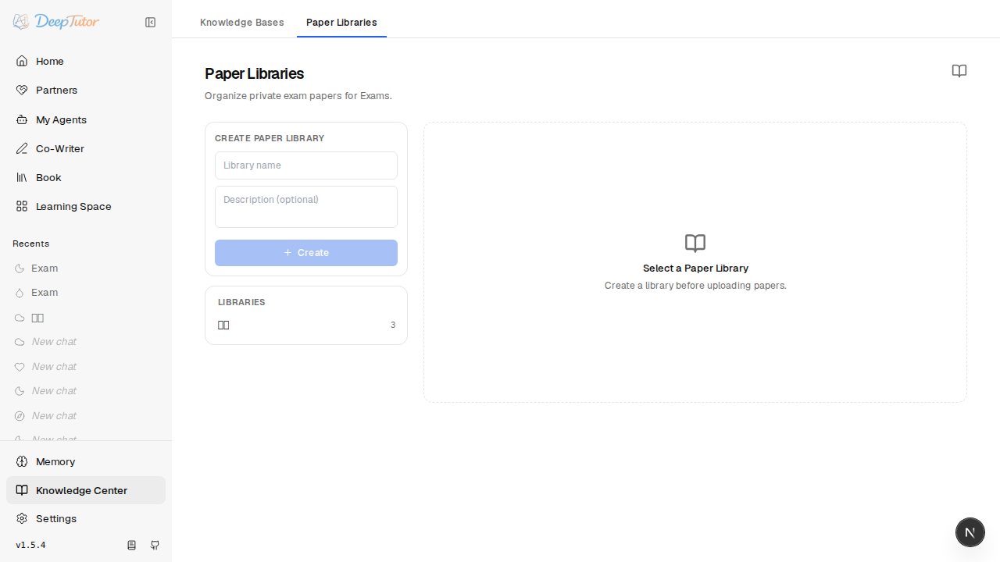
Screenshot 01：Knowledge Center → Paper Libraries。 建立 library 並保存 extraction 設定
操作：建立本案例 library，選擇實際 LLM option、
pymupdf4llmparser，按Save settings。預期：API 保存 LLM profile/model、parser engine 與
keep_partial；LLM 為必要設定。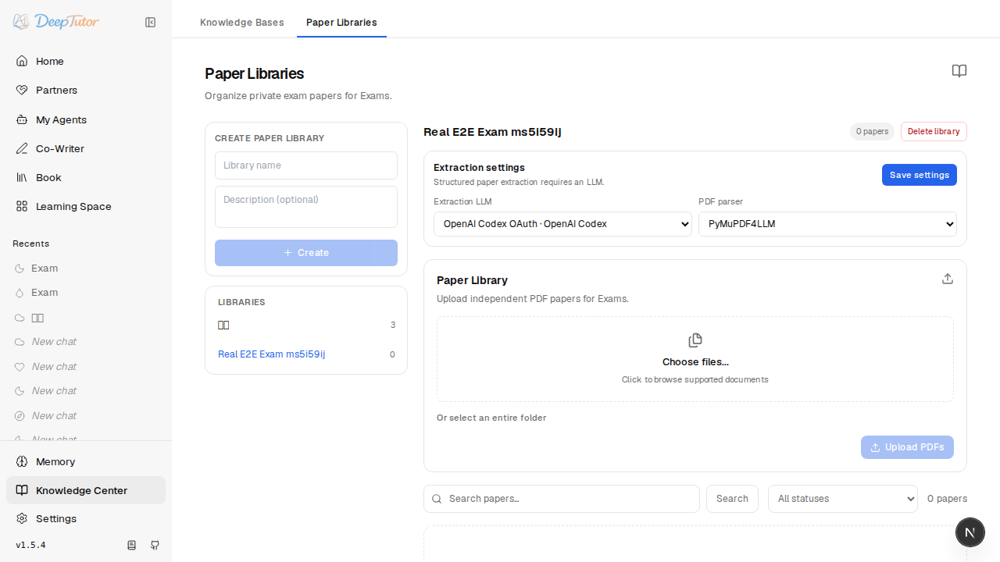
Screenshot 02：真實 extraction LLM、parser 與 failure policy 設定。 選擇並上傳真實 PDF
操作：選擇上述真實 PDF，確認檔名後按
Upload PDFs。預期：Paper record 進入
pending／processing，以背景工作執行真實 parser 與 LLM；不使用 fallback。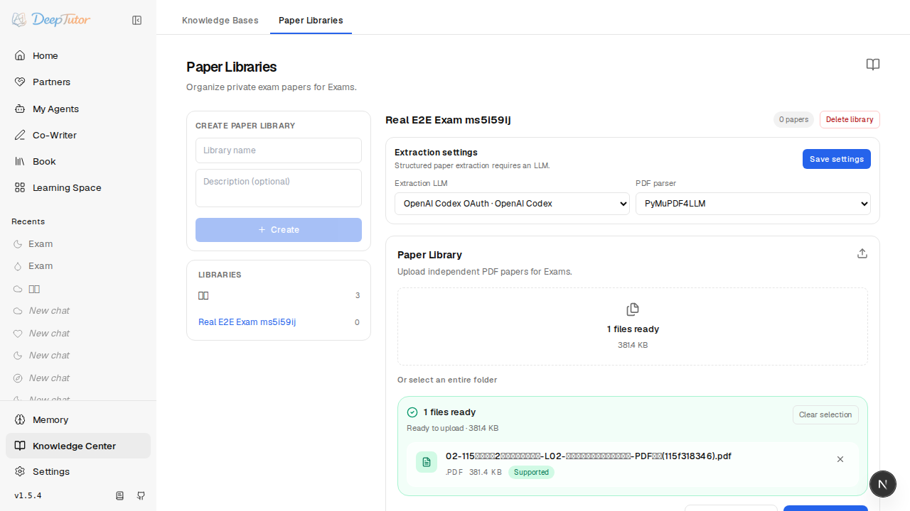
Screenshot 03：真實 PDF 已選取。 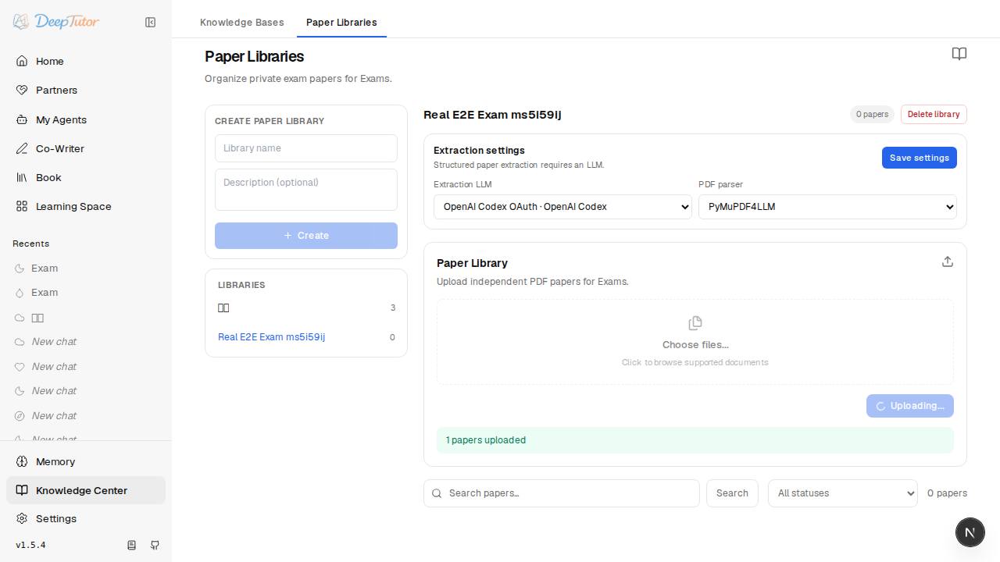
Screenshot 04：上傳已送出，Paper record 已建立。 等待背景擷取完成並執行 retry
操作：輪詢 status；terminal status 為
ready、ready_with_warnings或partial後，由 UI 按Retry並再次等待 terminal status。預期：兩次都由實際 extraction pipeline 完成，題目數大於 1；retry 不建立另一個 paper identity。
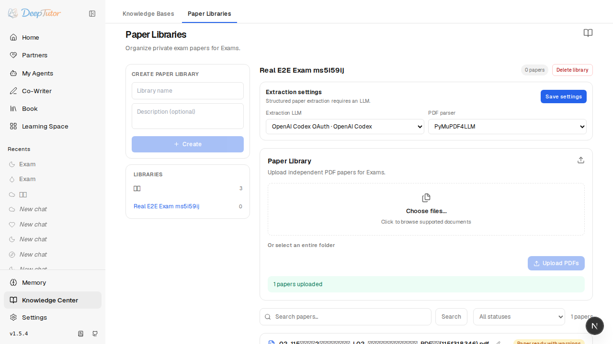
Screenshot 05：真實 LLM extraction 後可用。 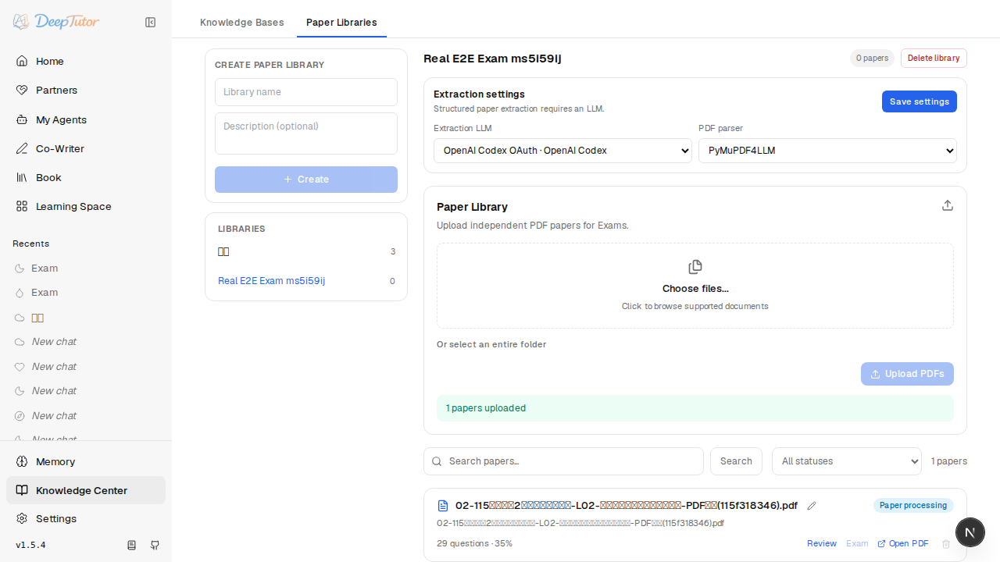
Screenshot 06：真實 retry 完成。 Paper Review 修正題號／答案並解除圖片關聯
操作：rename paper；進入
Review，將第一個 image question 的題號改成一、1-reviewed、保存 reference answer，並按圖片上的Remove。預期：PATCH 只更新 question metadata；PDF 不被修改，圖片 asset 不被當成 PDF 刪除；本案例保留另一題圖片供 Exam snapshot 驗證。
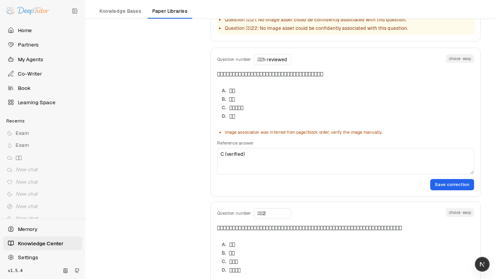
Screenshot 07：Review 修正與圖片解除關聯。 搬移到另一個 Paper Library
操作：建立 archive library，在原 library 的 paper row 使用
Move選擇 archive。預期：目的 library 出現同一個
paper_id，原 library 不再列出；hash conflict 與跨 library scope 由 API 保護。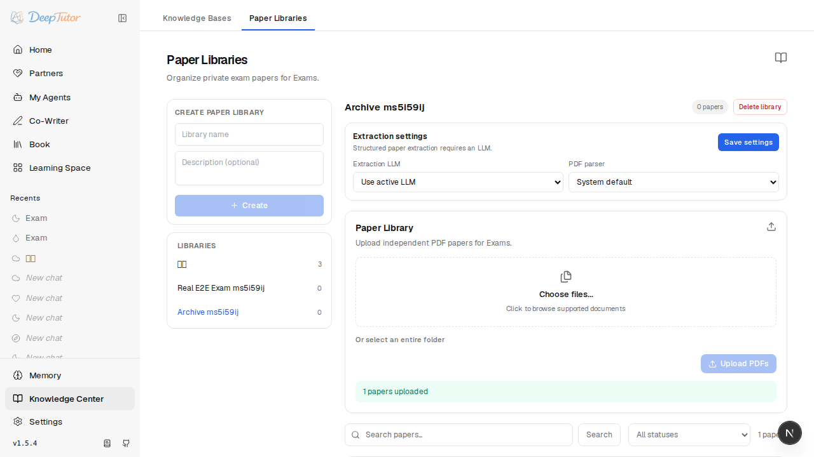
Screenshot 08：paper 已搬移，identity 保持不變。 Exam 的 library → paper picker
操作：從 moved paper 的 Review 按
Start Exam。預期：新 Chat session 顯示
Exam settings；Paper Library 與 Exam paper 都選中，composer 的 Knowledge selector 改為 Paper Library 圖示，沒有 Count、Difficulty 或 Type。前端送出的 source 只有 opaque paper ID。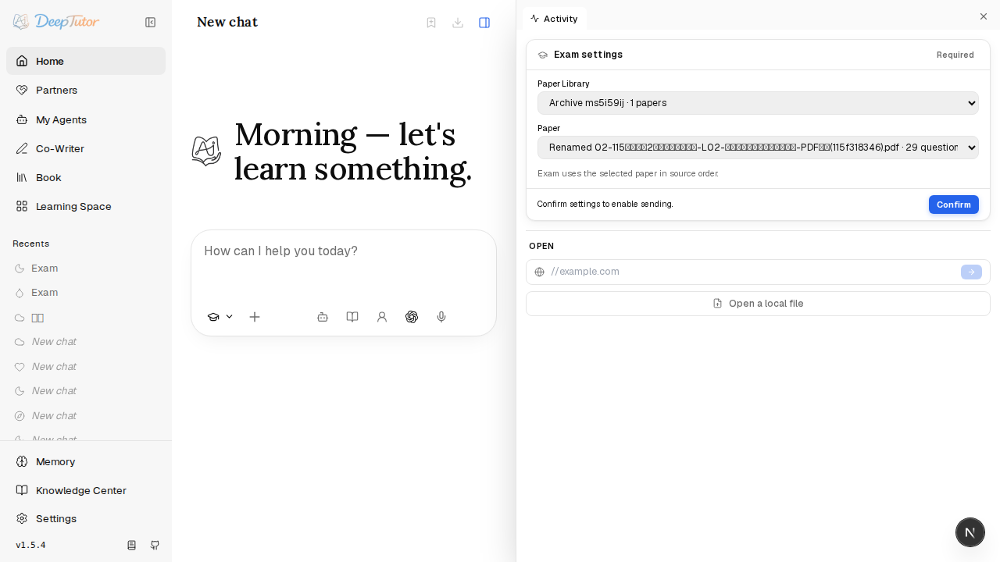
Screenshot 09：Exam library-to-paper picker。 透過真實 WebSocket 開始 Exam
操作：按
Confirm；Exam／Quiz 設定確認後會自動送出，不需要再輸入啟動文字或按Send。預期：workspace 顯示第一題，左側歷史 title 為有意義的
Exam；第一題以原始順序出現，source card 顯示Exam、renamed paper 與 source question number。backend 先建立 snapshot，再發出第一題。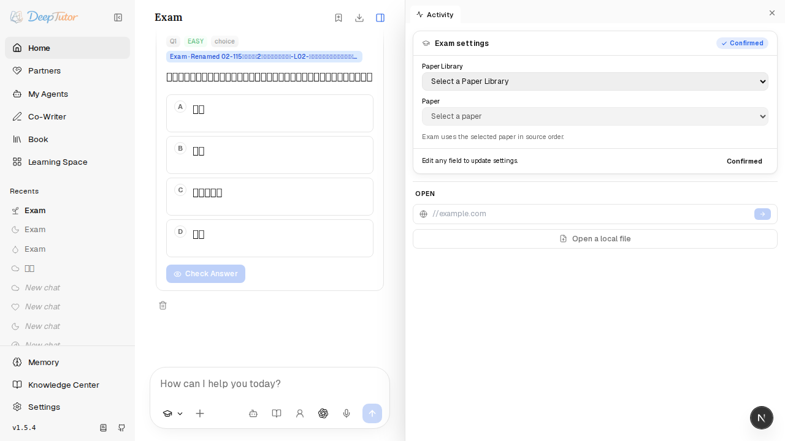
Screenshot 10：Exam 第一題與 snapshot-backed source card。 逐題作答並保存 Question Bank provenance
操作：選取第一題答案，按
Check Answer。預期：逐題 upsert 保存 library ID/name、paper ID/name、source question number、source type 與 snapshot ID；自動判定為正確時會自動前往下一題；本案例沒有 score、percentage 或 completion result。
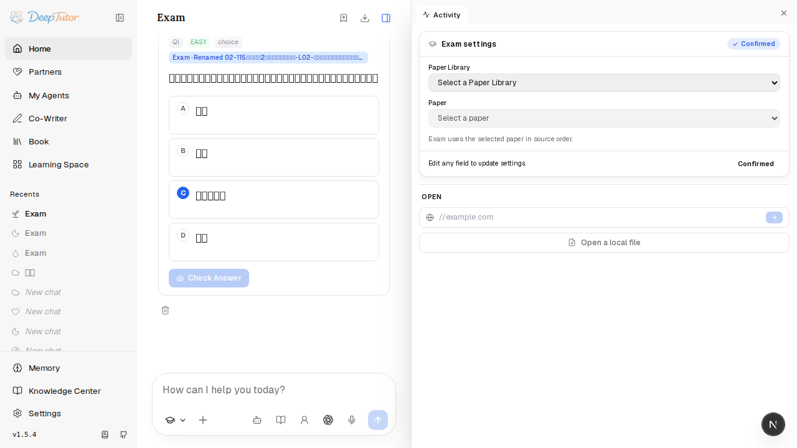
Screenshot 11：答案已選取。 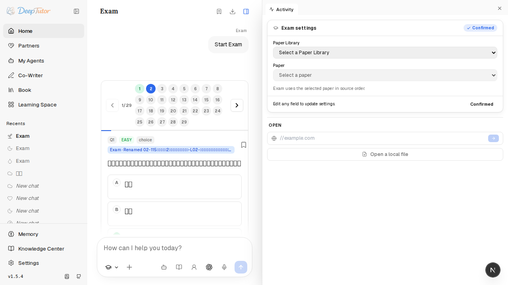
Screenshot 12：Question Bank provenance 已保存。 執行真實 AI Judge
操作：按
AI Judge，等待 real LLM streaming 完成。預期：AI judgment 非空並 PATCH 到相同 Question Bank entry，供 reload 與 library delete 後讀取。
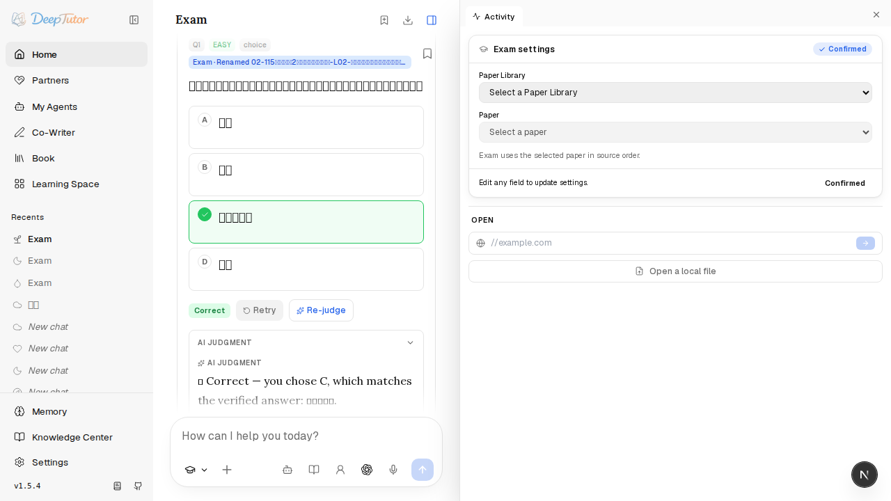
Screenshot 13：真實 AI Judge 結果。 確認 snapshot 圖片與 Next／Previous
操作：按
Next再按Previous；切換到未解除關聯的 image question。預期：題目保持原始順序，snapshot attachment URL 可正常載入，不依賴 live paper path。
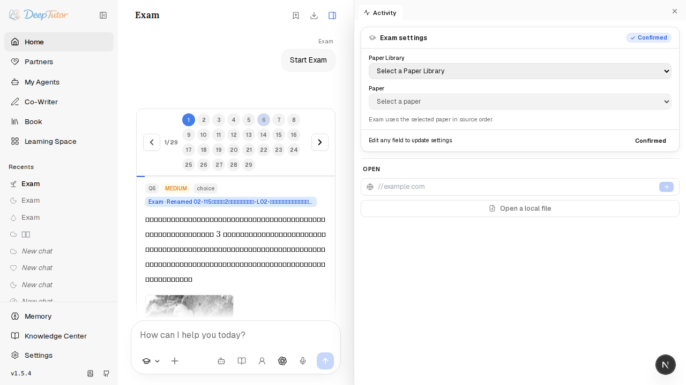
Screenshot 14：Exam snapshot image。 刪除 library 後重新讀取歷史
操作：刪除 archive Paper Library；確認 live paper 與 library API 為
404，reload 同一 Exam session。預期：Exam 題目、圖片、作答、Question Bank provenance 與 AI Judgment 仍可讀取；沒有 hard foreign key 阻止刪除，也沒有 cascade 到歷史 attachment／snapshot。
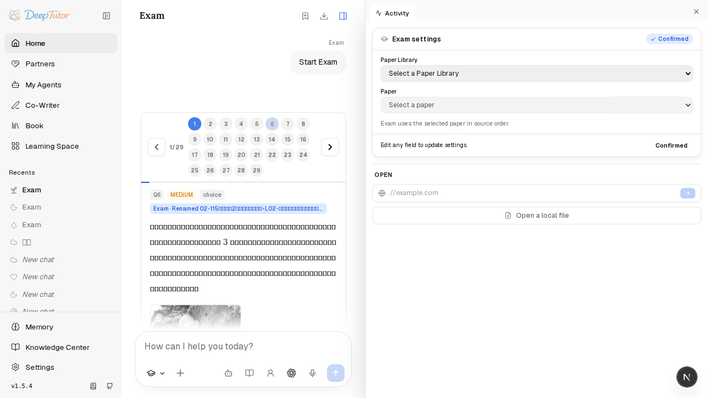
Screenshot 15：刪除 live library 後，歷史 Exam 仍可讀取。
4. 驗收 checklist
- 真實 PDF、backend、frontend、WebSocket 與網路 LLM；僅
PAPER_REAL_E2E=1執行。 - Library 建立、LLM/parser/failure policy 設定、upload、background polling、Review、retry 均完成。
- 題號／答案修正、圖片解除關聯、rename、move、library cascade delete 均完成。
- Exam picker 使用 library → paper；request 驗證 opaque paper ID，不含 filesystem path 或
source_path。 - Snapshot 在第一題前建立；保存原始順序、題目欄位、library/paper provenance 與必要圖片。
- 刪除 live Paper Library 後，歷史 snapshot、圖片、作答、Question Bank 與 AI Judge 均可讀取。
- Exam／Quiz 設定確認後自動開始；自動判定正確答案後前往下一題。
- 本功能沒有計分、points、percentage、completion result、statistics 或 ranking。
5. 證據完整性檢查
本 SOP 的 15 個 image reference 均指向 docs/sop/assets/knowledge-center-exam-e2e/ 下實際 Playwright screenshots；執行了 broken-image 檢查，全部存在且可讀。若要重新產生，保留相同相對路徑並以真實 E2E 測試重新截圖。
PAPER_REAL_E2E=1），不要宣稱 E2E 通過。